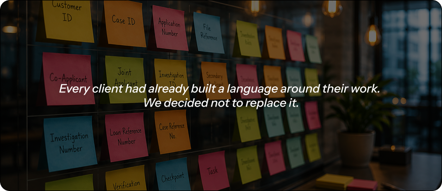

WorkSpace
Letting every client run cases their own way
Disclaimer: The interfaces presented in this case study are representative mockups and may not exactly reflect the production application. Certain elements have been modified or recreated to comply with confidentiality and NDA obligations.
I led product and design on Kriyam Workspace, a feature on Kriyam's field investigation platform that lets clients reshape the app around how they already work, instead of learning to work the way the app expects. Kriyam runs three different kinds of investigations — Pre & Post, Claims and Financial Services. All three come down to the same basic act: send someone out to verify something on the ground. Almost nothing else about them lines up. Workspace exists to close that gap.
QA — Suman Mandal

Problem: Every Client Was Speaking Their Own Language
It usually showed up in the first ten minutes of a demo. Someone on the client's side would land on a column labelled "Case ID" and pause — not confused, exactly, just unconvinced. Their team had been calling it something else for years, long before Kriyam existed. And Case ID was the easy one. The same thing happened with the second person tied to a case, with the individual checks that made up a bigger investigation, with half the vocabulary on the screen.
That's the part that's easy to miss unless you've sat through it yourself — this was never really a complaint about labels. Pre & Post, Claims, and Financial Services aren't the same workflow in different outfits. They run under different logic, answer to different people, and care about entirely different fields. But for a long time, Kriyam pushed all three through one fixed case list — same columns, same section names, same structure, no matter who you were or which format you were running. Every client had to learn Kriyam's language before they could get on with speaking their own.
You could see the cost in small, recurring moments rather than one dramatic failure. A new hire taking a little longer than they should to feel at home in the tool. Support fielding the same "can you just rename this for us" request every few weeks. A client spending their first month on the platform translating our screen into their own paperwork instead of just using it. None of it looked like a crisis. All of it added up.
What Gave It Away
We didn't need a formal study to see this one — it was in every client conversation we had, all the time. And it wasn't limited to what showed up on screen, either. This was baked into how teams already talked to each other on the ground, on calls, in their own internal paperwork, long before Kriyam ever entered the picture.
The case number was the easiest one to spot. Customer ID to one client, Case ID to another, Investigation ID to a third — the same field wearing three different names depending on whose office you walked into.
The second name on a case wasn't safe either. Co-applicant to one client, Joint applicant to another — same person, different word, depending entirely on whose paperwork you were reading.
Even the smallest unit of work had multiple names floating around. Subcase to one, verification to another, a point to a third — three words for the exact same piece of work.
None of these clients were wrong. Each had simply settled on their own vocabulary years before we showed up, and every time they used Kriyam, we were quietly asking them to unlearn it.
Solution: A Workspace of Your Own
So instead of asking clients to adopt Kriyam's language, we let them keep their own. Workspace gives every client a version of Kriyam that's genuinely theirs from the first day — the naming, the layout, the structure — something they shape themselves instead of something they request through a support ticket.
It starts the moment a new account is created, before anyone on the team has even logged in. The admin sets things up section by section: name one, add the case fields that belong to it, then move to the next — until the whole structure matches how this client actually organises a case, and setup is done.
None of it has to be right on the first pass. A preview button shows the case list exactly as the team will see it — the same sections, the same fields, laid out for real rather than described in a form. This is also where visibility and order get settled before anyone else logs in: hide a field nobody needs, move a column up if it matters more than the rest.
A client rarely stops at one workspace. One account can run several at once — a Claims workspace next to a separate Financial Services one, however the business actually splits its work — and all of them get created and managed from the same settings screen. Moving between workspaces was never meant to feel like switching accounts: the side navigation lets a team jump from one to another inside a single session, no logout and no fresh login required, with users and vendor agencies carrying over automatically so nobody's set up twice.
And it doesn't stop once a case goes live. Open an actual case, and the same sections an admin built during setup are right there on the case details page — labelled the way this client already talks, arranged the way this client decided. Because no client gets everything right on day one, none of it is locked in: order and visibility can still be changed from the case details page itself, long after the workspace first launched.
Worth saying plainly — Workspace doesn't touch what stage a case moves through next. That's a different feature, Workflow, and it deserves its own write-up rather than a passing mention here.
Same people, different rules.
A client running Pre & Post and Claims side by side usually isn't running two separate businesses — more often, it's the same field executives and the same vendor agencies doing the work, just under two different rulesets. So while every workspace keeps its own database and its own case data, users and agencies can be pulled in from a client's other workspaces rather than set up from zero each time. The one thing that doesn't cross over is the configuration itself — forms and case structures stay fully separate, on purpose, because that's exactly what each workspace exists to control.
Nothing about this was meant to be permanent.
The easy way to build an admin setting is to treat it as something configured once, carefully, and left alone. We didn't want that here. Client processes shift, teams reorganise, and someone always ends up wanting to rename a column six months after go-live. So every decision made at first setup — every label, every hidden section — stays just as editable a year in as it was on day one.
Impact: Less Time Teaching the App
Less time to
onboard a new team
Fewer support tickets
to rename a field
Less time to a client's
first live case
The clearest signal so far is time. Onboarding a new team onto Kriyam now takes roughly 30% less time than it did before Workspace existed. When the app already speaks a client's own language from day one, there's simply less to explain, and less for a new hire to quietly translate in their head before they can get to work.
Two more numbers back that up. Support tickets asking us to rename a field or add a column are down 85-90% since Workspace launched — probably the most direct read we have on whether the translation tax actually went away. And the time from account creation to a client's first live case has dropped by around 60%, so clients are getting up and running without needing us in the loop nearly as much as they used to.
Adoption tells its own story, too. From the very first clients onto Workspace, people started spinning up multiple workspaces on their own, unprompted — exactly the signal we wanted, that this was solving something real rather than sitting there as an option nobody touches.
It's still early, and we don't have years of data behind this the way an older product might. But every workspace a client sets up on their own terms is one less thing our team configures by hand on their behalf, and one less reason someone's first week on Kriyam feels like learning a foreign system instead of just doing their job.